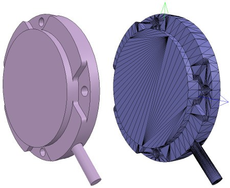
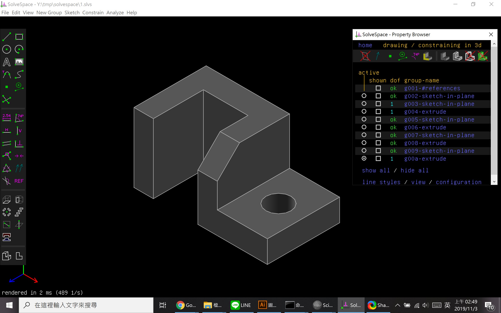
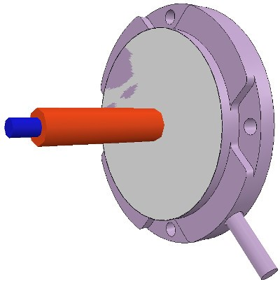
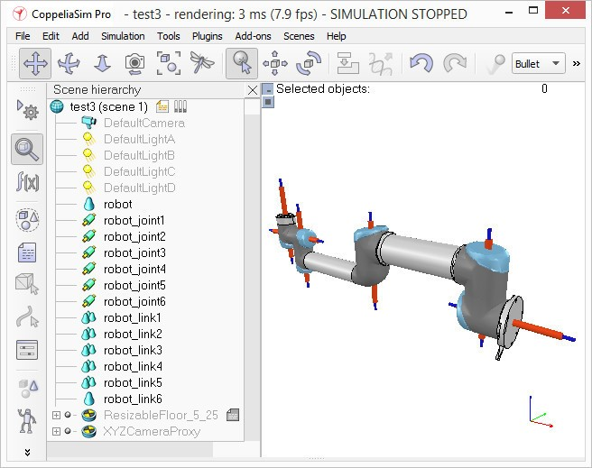

教科書內容整理 <<
Previous Next >> Note
week15-18
Week15
https://youtu.be/JLSiyZbzu7c
Week16
https://youtu.be/PtG_G3B92xM
Week17
[題目一] 個人貢獻
Now we will take care of the joints/motors. Most of the time, we know the exact position and orientation of each of the joints. In that case, we simply add the joints with [Menu bar --> Add --> Joints --> ...], then we can change their position and orientation with the position dialog and orientation dialog. In other situations, we only have the Denavit-Hartenberg (i.e. D-H) parameters. In that case, we can build our joints via the tool model located in Models/tools/Denavit-Hartenberg joint creator.ttm, in the model browser.
現在，我們將照顧關節/馬達。大多數時候，我們知道每個關節的確切位置和方向。在這種情況下，我們只需使用[菜單欄->添加->關節-> ...]添加關節，然後可以通過位置對話框和方向對話框更改它們的位置和方向。在其他情況下，我們只有Denavit-Hartenberg（即DH）參數。在這種情況下，我們可以通過Models / tools / Denavit-Hartenberg聯合creator.ttm中的工具模型來構建關節，在模型瀏覽器中。
Othertimes, we have no information about the joint locations and orientations. Then, we need to extract them from the imported mesh. Let's suppose this is our case. Instead of working on the modified, more approximate mesh, we open a new scene, and import the original CAD data again.
有時，我們沒有關於關節位置和方向的信息。然後，我們需要從導入的網格中提取它們。讓我們假設這是我們的情況。無需處理修改過的，更近似的網格，而是打開一個新場景，然後再次導入原始CAD數據。
Most of the time, we can extract meshes or primitive shapes from the original mesh. The first step is to subdivide the original mesh. If that does not work, we do it via the triangle edit mode. Let's suppose that we could divide the original mesh. We now have smaller objects that we can inspect. We are looking for revolute shapes, that could be used as reference to create joints at their locations, with the same orientation.
大多數時候，我們可以從原始網格中提取網格或基本形狀。第一步是細分原始網格。如果這不起作用，我們通過三角形編輯模式進行。假設我們可以劃分原始網格。現在，我們可以檢查較小的對象。我們正在尋找旋轉形狀，可以用作在其位置以相同方向創建關節的參考。
First, remove all objects that are not needed. It is sometimes also useful to work across several opened scenes, for easier visualization/manipulation. In our case, we focus first on the base of the robot: it contains a cylinder that has the correct position for the first joint. In the triangle edit mode, we have:
首先，刪除所有不需要的對象。有時在多個打開的場景中工作也很有用，以便於可視化/操作。在我們的案例中，我們首先關注機器人的基座：它包含一個圓柱體，該圓柱體的第一個關節的位置正確。在三角形編輯模式下，我們有：

[Robot base: normal and triangle edit mode visualization]
[機器人基礎：法線和三角形編輯模式可視化]
We change the camera view via the page selector toolbar button, in order to look at the object from the side. The fit-to-view toolbar button can come in handy to correctly frame the object in edition. Then we switch to the vertex edit mode and select all vertices that belong to the upper disc. Remember that by switching some layers on/off, we can hide other objects in the scene. Then we switch back to the triangle edit mode:
我們通過頁面選擇器 工具欄按鈕更改相機視圖，以便從側面查看對象。所述擬合到視圖工具欄按鈕可以派上用場正確幀在版的對象。然後，我們切換到頂點編輯模式，並選擇屬於上光盤的所有頂點。請記住，通過打開/關閉某些層，我們可以隱藏場景中的其他對象。然後我們切換回三角形編輯模式：

[Selected upper disc, vertex edit mode (1 & 2), triangle edit mode (3)]
[選擇的上光盤，頂點編輯模式（1和2），三角形編輯模式（3）]
Now we click Extract cylinder (Extract shape would also work in that case), this just created a cylinder shape in the scene, based on the selected triangles. We leave the edit mode and discard the changes. Now we add a revolute joint with [Menu bar --> Add --> Joint --> Revolute], keep it selected, then control-select the extracted cylinder shape. In the position dialog, on the position tab, we click Apply to selection: this basically copies the x/y/z position of the cylinder to the joint.
現在我們單擊“ 提取圓柱體”（在這種情況下，“ 提取形狀”也將起作用），這只是根據選定的三角形在場景中創建了圓柱體形狀。我們離開編輯模式並放棄更改。現在，通過[菜單欄->添加->關節->旋轉]添加旋轉關節，使其保持選中狀態，然後控制選擇提取的圓柱形狀。在位置對話框的“ 位置”選項卡上，單擊“ 應用於選擇”：這基本上將圓柱體的x / y / z位置複製到關節。
Both positions are now identical. In the orientation dialog, on the orientation tab, we also click Apply to selection: the orientation of our selected objects is now also the same. Sometimes, we will need to additionally rotate the joint about 90/180 degrees around its own reference frame in order to obtain the correct orientation or rotation direction. We could do that on the rotation tab of that dialog if needed (in that case, do not forget to click the Own frame button). In a similar way we could also shift the joint along its axis, or even do more complex operations. This is what we have:
現在兩個位置都相同。在“ 方向”對話框的“ 方向”選項卡上，我們還單擊“ 應用於選擇”：現在，所選對象的方向也相同。有時，我們將需要圍繞其自身的參考框架額外旋轉關節90/180度，以獲得正確的方向或旋轉方向。如果需要，我們可以在該對話框的“ 旋轉”選項卡上執行此操作（在這種情況下，請不要忘記單擊“ 自有框架”按鈕）。同樣，我們也可以沿關節的軸移動關節，甚至進行更複雜的操作。這就是我們所擁有的：

[Joint in correct location, with the correct orientation]
[在正確的位置，以正確的方向接合]
Now we copy the joint back into our original scene, and save it (do not forget to save your work on a regular basis! The undo/redo function is useful, but doesn't protect you against other mishaps). We repeat above procedure for all the joints in our robot, then rename them. We also make all joints a little bit longer in the joint properties, in order to see them all. By defaut, joints will be assigned to visibility layer 2, but can be changed in the object common properties. We assign now all joints to visibility layer 10, then temporarily enable visibility layer 10 for the scene to also visualize those joints (by default, only visibility layers 1-8 are activated for the scene). This is what we have (the model ResizableFloor_5_25 was temporarily made invisible in the model properties dialog):
現在，我們將關節複製回到原始場景中，並保存它（不要忘記定期保存您的工作！撤消/重做功能很有用，但不能保護您免受其他不幸的影響）。我們對機器人中的所有關節重複上述過程，然後重命名它們。我們還將使所有關節的關節屬性稍長一些，以便查看所有關節。通過默認，關節將分配給可見性層2，但可以在對象的公共屬性中進行更改。現在，我們將所有關節分配給可見性層10，然後為場景臨時啟用可見性層10，以使這些關節也可視化（默認情況下，僅激活場景的可見性層1-8）。這就是我們所擁有的（模型ResizableFloor_5_25在模型屬性對話框中暫時不可見）：

[Joints in correct configuration]
[接頭配置正確]
At this point, we could start to build the model hierarchy and finish the model definition. But if we want opur robot to be dynamically enabled, then there is an additional intermediate step:
至此，我們可以開始構建模型層次結構並完成模型定義。但是，如果我們希望動態啟用 opur機器人，則還有一個額外的中間步驟：
[題目二]
https://youtu.be/AWhDOZqJ8oQ
教科書內容整理 <<
Previous Next >> Note